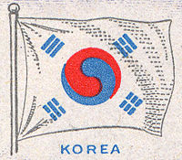

대한민국(大韓民國)이란 국호 중 대한(大韓)의 어원은 좁게 보면 고대 한반도 남부 일대에 존재했던 나라의 이름인 한(韓)에서 유래한다.
마한, 진한, 변한을 합쳐 삼한이라고 불렀다. 넓게 볼 때는 고구려, 백제, 신라를 합쳐 삼한이라 부르기도 하였다.
한(韓)이라는 말은 종교적 의미와 정치적 의미가 복합적으로 이루어져 고대부터 내려오던 말로서, "하나", "하늘", "크다", '칸(汗) 등 여러 해석이 있다.
근대 국가의 국호로서 "대한"은 1897년 고종이 대한제국을 선포하면서 다시 선택한 것으로
새 국호를 정한 이유를 "조선이라는 이름은 기자가 봉해졌을 때의 이름이니 제국의 이름으로 합당하지 않은데,
한(韓)이라는 이름은 우리의 고유한 이름이며 삼국시대의 세 국가를 아우르는 것이기도 하므로
"큰 한"이라는 이름이 적당하다"고 밝혔다. 이후 여기에 민국(民國)을 더한 "대한민국"이라는 국호는
1919년 3.1운동 직후에 만들어진 대한민국 임시 정부에서 정한 것이다.
1919년 4월 10일 임시 정부의 첫 의정원 회의에서 신석우가 "대한민국"(大韓民國)으로 국호를 정하자고 한 것에
여운형이 "대한"이라는 이름으로 나라가 망했는데 또다시 '대한'을 쓸 필요가 있느냐며 반박하자,
다시 신석우가 "대한으로 망했으니 대한으로 다시 흥해보자"라고 부연 설명을 하였고,
이에 다수가 공감함에 따라 "대한민국"으로 결정되었다고 전해진다.
